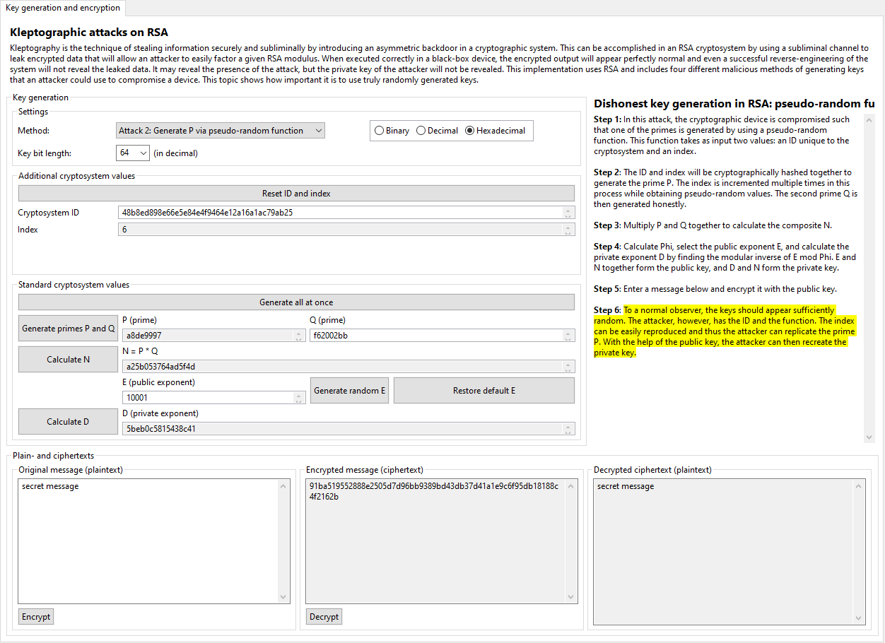

To overcome the detectability of the fixed P attack, the authors of [YY04] suggest in Subsection 11.2.2 that the prime P is perhaps better generated by using pseudorandom values based on a seed known only by the cryptographic device and the attacker. The idea is that every infected device would have a unique, 160-bit ID and a counter initialized to zero. Each time a key is generated, the ID and counter are hashed together to get a seed to use for generating the prime P. The output will appear random, the composites will not share a common denominator greater than 1, and the attacker merely has to keep track of the IDs and counters and to use the same functions in order to reproduce the private key.
There is one catch: if the device is successfully reverse-engineered, or the black box is opened, the engineer will immediately find the ID stored in memory, and by changing the counter value, he or she can reproduce every value ever output by the device and every value that it will output in the future. Although the device will still appear secure to other observers, to the engineer (and any other observer with the same abilities), the device is entirely compromised.
The implementation of the pseudo-random function attack in this plug-in uses MD5 to hash the ID and counter into a seed. To further improve the randomness and security of this implementation, the seed is built up in steps by using multiple hashes. In each case, the least-significant byte of the hash is stored and then the counter is incremented to prepare for the next hash. After six bytes have been generated in this manner, these are combined to form a seed used for the standard Java Random class, which is then used to generate the prime P. The second prime Q and all other cryptographic values are generated normally. (You are free to chose your own Q or to let the device generate a value for you.)
The user interface should appear similar to that of the honest key generation, with the primary exception of the "Reset ID and index" button and the related ID and index fields. These values must be initialized before primes can be generated but can then be left alone while simulating the workflow of a particular device. Resetting the ID and index effectively simulates the workflow of a different infected device.
This is no simulation of the attacker's perspective for this attack, since the sequence of steps is nearly identical to what the device did itself in the first place: the attacker would use the same ID and index as input into the same hash function to generate the same seed for the same pseudo-random function to generate the same prime P. Since the composite N is included in the public key, the second prime Q can be found by dividing N by P, and then the private exponent D can be found with the help of the public exponent E.
Click here to return to the kleptography index or here to continue to the next page (generating P via a pseudo-random generator).
[YY04] A. Young, M. Yung, Malicious Cryptography: Exposing Cryptovirology, John Wiley & Sons, 2004.